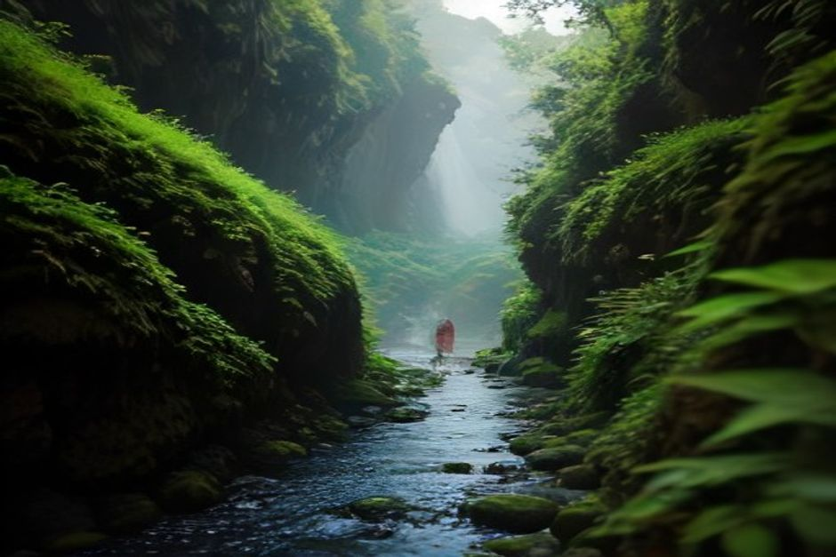
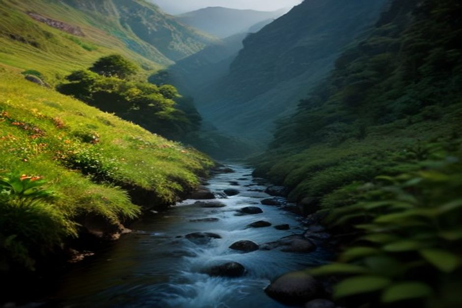

Si vous tapez « Rabaçal » ou « 25 fontes » en préparant votre séjour, vous tomberez vite sur la même question : est-ce que ça vaut vraiment la journée ? Oui, et c'est l'une des rares randonnées de Madère qui ne déçoit pas. Voici ce qu'il faut régler avant de partir : la réservation, le parking, la navette, la durée réelle et le bon moment.
La levada das 25 Fontes en bref
La randonnée porte le code PR6. Elle part de la Maison forestière de Rabaçal et suit un canal d'irrigation, une levada, jusqu'à la Lagoa das 25 Fontes, un bassin entouré d'arbres alimenté par de nombreuses petites sources qui sourdent de la roche.
- Distance : environ 4,5 km à l'aller, soit à peu près 9 km aller-retour.
- Durée : 3 à 4 heures avec la pause au bassin.
- Niveau : facile à modéré. Le chemin est presque plat.
- Droit d'entrée : payable en ligne à l'avance (voir plus bas).
Le chemin longe l'eau dans une forêt de lauriers très dense, entre fougères, rochers couverts de mousse et quelques petites cascades qui traversent le sentier lui-même.
Comment aller à Rabaçal depuis Funchal
Rabaçal se trouve en bordure du plateau du Paul da Serra, dans l'ouest de l'île, au cœur de la forêt Laurisilva. Comptez 50 à 60 minutes de route depuis Funchal, par l'ER110 et la VE4.
Aucun bus public ne dessert le départ du sentier. Vous y allez donc en voiture de location, en taxi ou avec un transfert organisé. La route monte dans la forêt de nuages avant de redescendre vers un petit parking : c'est l'un des coins les plus verts et les plus humides de Madère.

Faut-il réserver la levada das 25 Fontes en 2026 ?
Oui. Le PR6 fait partie des sentiers soumis au système SIMplifica, qui demande un petit droit d'entrée pour les levadas les plus fréquentées. Il faut compter environ 3 € par adulte de plus de 12 ans. Les enfants de moins de 12 ans ne paient rien.
Le paiement se fait en ligne, à l'avance, sur le portail officiel simplifica.madeira.gov.pt, qui existe en version anglaise. Cela prend quelques minutes. Gardez votre confirmation sur votre téléphone : aux heures d'affluence, les gardes la vérifient au départ.
Parking, navette ou descente à pied : le piège du départ
C'est ce qui surprend le plus ceux qui y vont pour la première fois. Le parking public gratuit de l'ER105 n'est pas au départ de la randonnée. Il se trouve environ 2 km au-dessus de la Maison forestière, au bout d'une route d'accès étroite et raide, fermée à la circulation générale.
Vous avez deux solutions :
- Descendre à pied : environ 20 minutes à la descente. Mais la remontée prend 30 à 35 minutes, et vous la ferez en fin de journée, les jambes fatiguées.
- Prendre la navette locale : elle circule pendant la journée et se paie en espèces, un petit tarif à chaque trajet. Prévoyez donc un peu de monnaie.
La plupart de ceux qui ont tenté la marche reprennent la navette la fois suivante.
Sur le sentier : ce qui vous attend jusqu'au bassin
Le terrain est doux, mais pas anodin. Il y a quelques passages étroits avec un à-pic le long du canal, et la pierre peut glisser après la pluie, ce qui arrive souvent à cette altitude.
Au bout du chemin, le bassin est l'un des plus jolis endroits de l'île. C'est aussi l'un des plus fréquentés : dès la fin de matinée, il y a du monde pour la photo.
Ce qu'il faut emporter
- De vraies chaussures fermées, avec de l'adhérence.
- Une veste de pluie légère, quelle que soit la météo annoncée à Funchal : Rabaçal a son propre climat.
- De l'eau et de quoi manger. Rien n'est vendu sur le sentier.
- Des espèces pour la navette.
- Une lampe frontale ou la lampe de votre téléphone si vous ajoutez le Risco.
Peut-on se baigner aux 25 Fontes ?
Techniquement oui, mais l'eau vient directement des sources de montagne et reste froide toute l'année, même en été. La plupart des randonneurs se contentent de tremper les pieds, de prendre des photos et de pique-niquer sur les rochers.
Si vous voulez une vraie baignade pendant le même séjour, c'est sur la côte sud qu'il faut la chercher : les criques abritées y sont bien plus accueillantes en été.
Levada do Risco : faut-il l'ajouter ?
Si vous avez une heure de plus et de bonnes jambes, oui. La levada do Risco (PR6.1) partage le début du chemin depuis Rabaçal, puis bifurque vers la plus haute cascade à chute unique de Madère.
Une partie du parcours passe par un tunnel non éclairé d'environ 800 mètres. Une frontale ou la lampe du téléphone sont indispensables : traverser avec une lumière faible n'a rien d'agréable. En combinant le Risco et les 25 Fontes, vous passez d'environ 3 heures à 4 ou 5 heures de marche. Calez votre retour en conséquence.

Quand partir, et à quelle heure ?
Arrivez le plus près possible de l'ouverture. En fin de matinée, les cars remplissent le parking et le bassin se couvre de monde qui attend son tour pour la photo.
- Printemps et début d'été : cascades les plus fournies, forêt la plus verte.
- Fin d'été : sol plus sec, mais les sources coulent toujours.
- Semaine ou week-end : la semaine est nettement plus calme, toute l'année.
Le matin à Rabaçal, l'après-midi sur l'Atlantique
Pour qui séjourne quelques jours à Madère, le plus agréable est de ne pas tout faire en forêt. Passez la matinée dans la fraîcheur de Rabaçal, puis redescendez au niveau de la mer. Le lendemain, ou le même jour si vous avez de l'énergie, une sortie en bateau privé avec Chifbay change complètement de décor.
Le bateau part de la Marina do Funchal, ponton C, avec un seul groupe à bord, jusqu'à 5 personnes et deux skippers licenciés de Madère. La sortie à la journée part à 10 h ou à 14 h : 2 h 30 jusqu'à Ribeira Brava pour 500 €, ou 3 h jusqu'à Ponta do Sol pour 600 €. Elle passe par Câmara de Lobos et Cabo Girão, avec baignade et paddle à la Fajã dos Padres. Le prix est pour tout le bateau, pas par personne.
Après une longue marche, la sortie coucher de soleil est plus tranquille : elle part 1 h 15 avant le coucher du soleil, toute l'année, pour 400 € jusqu'à Cabo Girão (2 h) ou 500 € jusqu'à Ribeira Brava (2 h 30), sans arrêt baignade. Collation et boissons à bord sont comprises, ainsi qu'une vidéo 360° Insta360, des images de drone si la météo le permet et des photos prises avec un vrai appareil. L'annulation est gratuite jusqu'à 24 heures avant le départ.
Pour comparer les options, voyez notre guide des meilleures sorties en bateau à Madère et nos infos pratiques, ou découvrez le bateau privé directement.